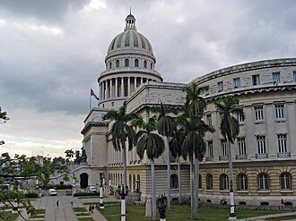
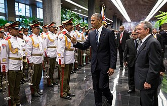
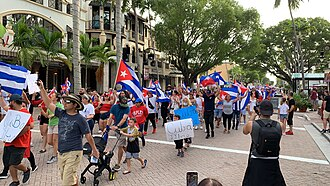
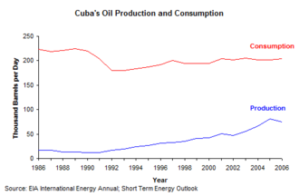
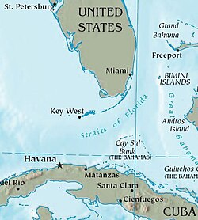
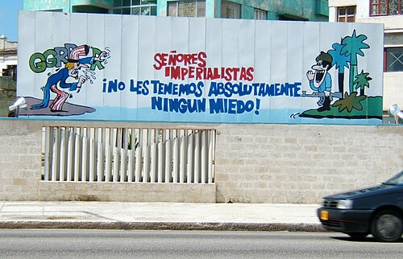

United States embargo against Cuba


._LOC_2003623399.jpg){kind=link}
A United States embargo has prevented U.S. businesses and citizens from conducting trade or commerce with Cuban interests since 1960. Modern diplomatic relations are cold, stemming from historic conflict and divergent political ideologies. U.S. economic sanctions against Cuba are comprehensive and impact all sectors of the Cuban economy. It is the most enduring trade embargo in modern history.[1][2] The U.S. government influences extraterritorial trade with Cuba. The embargo has faced international condemnation for its adverse impact on Cubans, including by the United Nations who have formally condemned it intermittently since 1992.
The U.S. government first launched an arms embargo against Cuba in 1958, with their energy and agricultural sectors targeted in 1960. Following the Cuban Revolution, there were nationalizations and a trade war between the two countries. In October the Cuban government responded with seizure of American economic assets, including oil refineries. The U.S. retaliated with a total embargo on Cuban trade, with exceptions for food and medicine. Cuba held nuclear missiles for the Soviet Union during the 1962 Cuban Missile Crisis, which resulted in the U.S. fully blockading the island. The embargo was loosened during the Cuban thaw from 2015 to 2017, but was tightened sharply again thereafter.
The embargo is enforced mainly through the Trading with the Enemy Act of 1917, the Foreign Assistance Act of 1961, the Cuban Assets Control Regulations of 1963, the Cuban Democracy Act of 1992, the Helms–Burton Act of 1996, and the Trade Sanction Reform and Export Enhancement Act of 2000.[3][4] Relations remain tense due to stark differences on immigration, counterterrorism, civil and political rights, human rights, electoral interference, disinformation campaigns, humanitarian aid, trade policy, financial claims, U.S. foreign policy, and Cuban foreign policy.[5]
History
[edit]Eisenhower presidency
[edit]
The United States imposed an arms embargo on Cuba on March 14, 1958, during the armed conflict of 1953-1959 between rebels led by Fidel Castro and the Fulgencio Batista régime.[6] Arms sales violated U.S. policy which had permitted the sale of weapons to Latin-American countries which had signed the 1947 Inter-American Treaty of Reciprocal Assistance (Rio Treaty) as long as the weapons were not used for hostile purposes.[7] After the Castro socialist government came to power on January 1, 1959, relations were initially friendly between Castro and the Dwight D. Eisenhower administration.[8]
In December 1959, less than twelve months after the Cuban Revolution, the Central Intelligence Agency (CIA) developed a plan for paramilitary action against Cuba. It was approved and implemented in March 1960. The CIA recruited operatives on the island to carry out terrorism and sabotage, kill civilians, and cause economic damage.[12]
In April, the U.S. Department of State issued a memorandum acknowledging majority support within Cuba for the Castro administration, the fast spread of communism within the country, and the lack of an effective political opposition.[13] In May the Cuban government began regularly and openly purchasing armaments from the Soviet Union, citing the U.S. arms embargo. In July 1960 the U.S. reduced the import quota of brown sugar from Cuba to 700,000 tons under the Sugar Act of 1948;[14] the Soviet Union responded by agreeing to purchase the sugar instead.[15]: 131
In June 1960, Eisenhower's government refused to export oil to the island, leaving Cuba reliant on Soviet crude oil. Cuba and the Soviet Union signed a trade agreement according to which the Soviet Union would provide 900,000 tons of oil to Cuba.[16]: 40 The U.S. viewed the agreement as a provocation, and successfully urged Esso, Texaco, and Shell to refuse to process Soviet crude in their Havana and Santiago de Cuba refineries.[16]: 40 On June 29 and July 1, 1960, Cuba confiscated the refineries.[16]: 40 The U.S. responded by canceling its quota of sugar purchases from Cuba.[16]: 40
On July 11, 1960, Eisenhower wrote a personal letter to the UK prime minister Harold Macmillan encouraging joint action in sanctioning Cuba. Eisenhower elaborates in the letter that the reason for the original diplomatic decline with Cuba was:
The story of the cancellation of elections, of the ascendancy of the Communist oriented group and purge of the moderates, of the executions and the hounding of all anti-Communists, of the abortive Cuban-supported efforts to overthrow various Caribbean governments, and of the shrill anti-American diatribes... We were directly affected when Castro, choosing the Agrarian Reform Law version advanced by the extremists, authorized the expropriation of extensive American properties without acceptable provision for compensation.
Eisenhower goes on to mention that despite these issues, he pursued a "policy of restraint" throughout 1959, but that the ultimate factor leading to a proactive approach against the Castro government in 1960 was:
...the degree to which Cuba had been handed over to the Soviet Union as an instrument with which to undermine our position in Latin America and the world.[17]
In response to sanctions, on August 30, 1960, the Cuban government nationalized three American-owned oil refineries as well as Compañía Cubana de Electricidad, the Cuban Telephone Company, and 36 sugar mills.[16]: 40 The refineries became part of the state-run company, Unión Cuba-Petróleo.[18] This prompted the Eisenhower administration to launch the first trade embargo—a prohibition against selling all products to Cuba outside of humanitarian aid.[13]
In October 1960, the Cuban administration responded by nationalizing all American businesses and most American privately owned properties on the island. Castro promised to separate Americans in Cuba from all of their possessions "down to the nails in their shoes".[13] Cuba's nationalization laws required the government to compensate the owners of seized property, but compensation was to be made in Cuban bonds, an offer rejected by American authorities.[13] Payments pursuant to the Cuban bonds were to be paid from the sale of Cuban sugar to the U.S., but the Americans had just canceled its purchases of Cuban sugar.[19]: 347 No compensation was paid. Other countries which had their assets nationalised, including Switzerland, Canada, Spain, and France, were more agreeable to Castro’s terms, seemingly convinced that they would not be able to get a better deal.[20]
The second wave of nationalizations prompted the Eisenhower administration, in one of its last actions, to sever all diplomatic relations with Cuba in January 1961.[13] The U.S. partial trade embargo with Cuba continued under the Trading with the Enemy Act of 1917.[21] The Cuban government's nationalization of U.S. owned property is the “largest uncompensated taking of American property by a foreign government in history.”[22] Assets seized, included vacation homes and bank accounts of wealthy individuals, but most seized property was owned by large American corporations, including sugar factories, mines and oil refineries.[20]
Kennedy presidency
[edit]Following the Bay of Pigs Invasion of 17 to 20 April 1961, an operation devised under Eisenhower but which President John F. Kennedy had approved preceding his presidency, Castro characterized the Cuban revolution and state as "socialist".[23][24] It aligned with the Soviet Union. On September 4, 1961, partly in response, Congress passed the Foreign Assistance Act, a Cold War Act that prohibited aid to Cuba and authorized the President to impose a complete trade embargo against Cuba. On January 21, 1962, Cuba was suspended by the Organization of American States (OAS), by a vote of 14 in favor, one (Cuba) against with six abstentions.[25] Mexico and Ecuador, two abstaining members, argued that the OAS Charter did not authorize expulsion. Multilateral sanctions were imposed by OAS, led by the U.S., on July 26, 1964, but were later rescinded on July 29, 1975. Relations between Cuba and the OAS have since warmed and the suspension was lifted on June 3, 2009.[26]
Starting in November, the U.S. engaged in a violent campaign of terrorism and sabotage against civilians and military targets on the island, known as the Cuban Project.[34] As well as the removal of the Castro government, the U.S. sought to force the Cuban government to introduce intrusive civil measures and divert precious resources to protect its citizens from the terror attacks.[35]
Kennedy extended measures by executive order, first widening the scope of the trade restrictions on February 8 and then again on March 23, 1962.[15]: 133 These measures expanded the embargo to include all imports of products containing Cuban goods, even if the final products had been made or assembled outside Cuba. On August 3, 1962, the Foreign Assistance Act was amended to prohibit aid to any country that provides assistance to Cuba. On September 7, 1962, Kennedy formally expanded the Cuban embargo to include all Cuban trade, except for the non-subsidized sale of food and medicines.[36] Following the Cuban Missile Crisis of October 1962, Kennedy imposed travel restrictions on February 8, 1963, and the Cuban Assets Control Regulations were issued on July 8, 1963, again under the Trading with the Enemy Act, in response to Cuba hosting Soviet nuclear weapons. These measures froze Cuban assets in the U.S. and consolidated existing restrictions.[37]
Rapprochement with Cuba
[edit]The restrictions on U.S. citizens traveling to Cuba lapsed on March 19, 1977;[38] the regulation was renewable every six months, but President Jimmy Carter did not renew it and the regulation on spending U.S. dollars in Cuba was lifted shortly afterwards.[39][40] President Ronald Reagan reinstated the trade embargo on April 19, 1982, though it was now only restricted to business and tourist travel and did not apply to travel by U.S. government officials, employees of news or film making organizations, persons engaging in professional research, or persons visiting their close relatives.[40] This was modified 22 years later with the present regulation, effective June 30, 2004, being the Cuban Assets Control Regulations (31 C.F.R. Part 515).[41][42]
Increasing legislation
[edit]The embargo was reinforced in October 1992 by the Cuban Democracy Act and in 1996 by the Cuban Liberty and Democracy Solidarity Act (known as the Helms–Burton Act) which penalizes foreign companies that do business in Cuba by preventing them from doing business in the U.S.[43] The Helms-Burton Act further restricted U.S. citizens from doing commerce in or with Cuba, and mandated restrictions on giving public or private assistance to any successor government unless and until certain claims against the Cuban government were met. The key sponsor of the Cuban Democracy Act, Democrat Robert Torricelli, stated that the legislation would "wreck[sic] havoc on that island."[43][unbalanced opinion?] Justification provided for these restrictions was that these companies were trafficking in stolen U.S. properties, and should thus be excluded from the United States.[citation needed] The European Union criticized the Helms-Burton Act because it felt that the U.S. was dictating how other nations ought to conduct their trade and challenged it on that basis. The E.U. eventually dropped its challenge in favor of negotiating a solution.[44]
After the Cuban military shot down two airplanes operated by Hermanos al Rescate (Brothers to the Rescue) in 1996, killing three Americans and a U.S. resident, a bi-partisan coalition in the U.S. Congress approved the Helms–Burton Act.[45] The Title III of this law also states that any non-U.S. company that "knowingly traffics in property in Cuba confiscated without compensation from a U.S. person" can be subjected to litigation and that company's leadership can be barred from entry into the United States. Sanctions may also be applied to non-U.S. companies trading with Cuba. This restriction also applies to maritime shipping, as ships docking at Cuban ports are not allowed to dock at U.S. ports for six months. This title includes waiver authority, so that the President might suspend its application. The waiver must be renewed every six months and traditionally was until U.S. President Donald Trump in 2019.[15]: 136
In response to pressure from some American farmers and agribusiness, the embargo was relaxed by the Trade Sanctions Reform and Export Enhancement Act, which was passed by Congress in October 2000 and signed by President Bill Clinton. The relaxation allowed the sale of agricultural goods and medicine to Cuba for humanitarian reasons. Although Cuba initially declined to engage in such trade (having even refused U.S. food aid in the past, seeing it as a half-measure serving U.S. interests),[46] the Cuban government began to allow the purchase of food from the U.S. as a result of Hurricane Michelle in November 2001.[47] In some tourist spots across the island, American brands such as Coca-Cola can be purchased. Ford tankers refuel planes in airports and some computers use Microsoft software.[48] The origin of the financing behind such goods is not always clear. The goods often come from third parties based in countries outside the U.S., even if the product being dealt originally has U.S. shareholders or investors.[49]
Cuban thaw
[edit]

In April 2009, President Barack Obama first attempted to warm relations by easing the U.S. travel ban, allowing Cuban-Americans to travel freely to Cuba.[50][51] Ana Cecilia became the first officially approved ship to sail in July 2012 from Miami to Cuba.[52][53] Two years later, in 2014, the Obama administration announced its intention to formally re-establish relations with Cuba and later completed a prisoner exchange.[54][55][56] President Obama and First Secretary of the Communist Party of Cuba Raúl Castro met on April 11, 2015, the first meeting in over 50 years.[54][57][58] On May 29, 2015, the U.S. removed Cuba from its designated list of state sponsors of terrorism.[59][60] It was later re-added under the first Trump administration six years later.[61][62] American banks then were temporarily allowed to open accredited accounts in Cuban banks.[63][64]
Relations were officially established on July 20, 2015, with increased travel licenses, amended civil aviation and commercial passenger aircraft regulations, and normalized import-export license requirements announced in September.[65] In February 2016, the U.S. agreed to allow two American men to build a $5–10 million tractor factory in Cuba.[66] The deal was later disallowed by Cuban authorities because one of the investors was a Cuban permanent resident and Cuba does not allow large investments by Cubans who live on the island.[67][68] In his final eight days in office, Obama formally discontinued the wet feet, dry feet policy, announcing that all illegal immigrants from Cuba would be subject to removal, in an effort to promote legal alternatives.[69][70][71]
Renewed embargo
[edit]On November 8, 2017, it was announced that President Trump's administration had enacted new rules which would re-enforce the business and travel restrictions which were loosened by the Obama administration and would go into effect on November 9.[72][73] In 2019, ExxonMobil, the largest American energy producer, sued the Cuban government for their theft of U.S. oil assets in the 1960s.[18] In September 2019, the U.S. tightened restrictions on Cuba by limiting U.S. remittances to Cuba and further closing the country's access to the U.S. financial system.[74] Immediately following Cuba's re-designation as a state sponsor of terrorism in January 2021, the State Department launched new political sanctions against Cuba's support of Venezuela and their president, Nicolás Maduro.[75] That month the U.S. Treasury additionally sanctioned the Cuban Ministry of Interior for human rights abuses in Cuba.[76]


In July 2021, under President Joseph Biden, the U.S. imposed sanctions on Cuba's domestic police force and on two of Cuba's leaders in response to political violence related to the 2021 Cuban protests.[77] Cuba attempted to embargo the U.S. by banning U.S. cash deposits at Cuban banks in 2021 but had to reverse the ban due to economic distress in 2023.[78] The U.S. government eased select financial sanctions against companies that serve Cuban interests but have no link to the Cuban government in 2024.[79] President Biden authorized additional sanctions against Cuba during the 2024 Cuban protests which caused further diplomatic strain with First Secretary of the Communist Party of Cuba Miguel Díaz-Canel.[80] First Secretary Díaz-Canel was joined by former First Secretary Raúl Castro in a protest with "tens of thousands of Cubans" against the U.S. embargo in December following the re-election of President Trump.[81]
"Total pressure" embargo
[edit]The U.S. government significantly tightened its economic sanctions against Cuba in January 2025, orienting around a "total pressure" or "maximum pressure" strategy.[82][83] In addition to re-designating the island as a state sponsor of terrorism for a third time, the State Department announced further sanctions against Cuban military contractors and further restricted Cuba's access to the U.S. dollar.[84] U.S. Homeland Security and Coast Guard soon thereafter restricted immigration of economic refugees from Cuba, along with Haiti, Nicaragua, and Venezuela.[85] The U.S. re-activated Title III of the Helms–Burton Act, an international deterrent against foreign investment in Cuba.[86][87] The U.S. government halted foreign aid funding, expanded visa restrictions, and formally cautioned against Cuban forced labor in February.[88][89] President Trump issued a presidential directive in July for greater enforcement of the Cuban travel ban, further isolating the tourism industry of Cuba.[90] The U.S. government banned First Secretary Díaz-Canel along with two ministers from entering the U.S., later restricting access to the Cuban luxury real estate sector.[91]
In January 2026, the U.S. introduced an extraterritorial tariff mechanism aimed at halting the supply of crude oil and refined petroleum products to the island.[92][93] The UN publicly criticized the American trade policy, calling it a "fuel blockade".[94]
Impact
[edit]Economic impact
[edit]

The economic impact of the U.S. trade embargo on Cuba is comprehensive and impacts all sectors of the Cuban economy.[95] The United Nations estimated in 2023 the total economic damage to the Cuban economy to be in the "trillions of dollars" since inception.[96][15] A 2015 report in Al Jazeera estimated that the embargo had cost the Cuban economy $1.1 trillion in the 55 years since its inception, once inflation is taken into account.[97] The Cuban government assessed the cost in 2018 to be around $933 billion since inception.[98] In 2009, the U.S. Chamber of Commerce estimated that the embargo costs the U.S. economy $1.2 billion per year in lost sales and exports, while the Cuban government estimates that the embargo has cost the island itself $753 million annually.[99][100] In 2001, the U.S. International Trade Commission found that, from 1996 and 1998, without the embargo, Cuban imports to the U.S. would be worth $658 million.[101] In 2002, the U.S.-based, anti-embargo Cuba Policy Foundation estimated that the embargo costs the U.S. economy $3.6 billion per year in economic output.[102] The U.N. assessed the damage to the Cuban economy from 2022 to 2023 to be at $4.87 billion.[96]
The U.S. government has pursued extraterritorial measures to enforce its embargo. Cuban ambassador Ricardo Alarcón cited 27 recent cases of trade contracts interrupted by U.S. pressure to the U.N. in 1991. British Petroleum was seemingly dissuaded by U.S. authorities from investing in offshore oil exploration in Cuba despite initially expressing interest. In 1992, the U.S. State Department discouraged firms like Royal Dutch Shell and Clyde Petroleum from investing in Cuba.[103] In 1998, U.S. officials attributed Cuba's economic penury not as a result of the embargo, but instead its unwillingness to liberalize its own economy and substantial debts owed to its Japanese, European, and Latin American trading partners.[104]
After the formal implementation of the embargo and the passage of Proclamation 3355, there was a 95% decrease in Cuba's sugar quota, which canceled roughly 700,000 tons of the 3,119,655 tons previously allotted to the United States.[105] A year later, Cuba's sugar quota was reduced to zero when President Eisenhower issued Proclamation 3383.[105] This substantially affected Cuba's total exports, as Cuba was one of the world's leading sugar exporters at the time.[105]
In 1989, with the collapse of the Soviet bloc, Cuba witnessed its most devastating economic crises. Cuba's GDP plummeted 34% and trade between the nations apart from the Council of Mutual Economic Assistance (CMEA) declined by 56%.[105] Between 1989 and 1992 (the Special Period), the termination of trade partnerships with the Soviet bloc caused the total value of Cuba's exports to fall by 61% and imports to drop by approximately 72%.[106] International economists believed the Cuban government would fall along with the Soviet Union but Cuba instituted a campaign of macroeconomic adjustment and liberalization instead, which provided significant economic recovery.[105] As of 2024, Cuba was experiencing its worst economic crisis in 30 years due to increased sanctions, the challenges of economic reforms, and the COVID-19 pandemic.[107][108] In February 2026, Cuba suspended refueling for airliners at its airports, including José Martí International Airport, stating it had exhausted the country's fuel supply due to the U.S. blockade of the island and the end of fuel supplies from Venezuela after U.S. intervention the previous month.[109]
Financial impact
[edit]The U.S. government has implemented significant restrictions on financial activity within Cuba. The U.S. Treasury holds over $6 billion worth of financial claims against the Cuban government according to the U.S. Foreign Claims Settlement Commission.[110][111] There are over 6,000 financial claims against the Cuban government by American companies valued at around $2 billion.[112] The Cuban government is required to pay cash for all food imports from the U.S., as credit is not allowed.[113] Cuba is heavily dependent on U.S. remittances from family members and access to U.S. dollar deposits influences financial decision-making on the island.[114] Limited access to the U.S. dollar and financial system has exacerbated wealth inequality in Cuba and forced involuntary dollarization on the island.[114] Cuban banks are banned from operating within the United States.[115] U.S. investors are prohibited from owning and trading Cuban sovereign debt.[112]
Cuba conducts international financing with many countries, including many U.S. allies; U.S.-based companies, and companies that do business with the U.S. which trade in Cuba do so at the risk of U.S. sanctions.[116][117] The U.S. has threatened to stop financial aid to other countries if they trade non-food items with Cuba. The U.S.'s attempts to do so have been vocally condemned by the United Nations General Assembly as an extraterritorial measure that contravenes "the sovereign equality of States, non-intervention in their internal affairs and freedom of trade and navigation as paramount to the conduct of international affairs".[118]
Humanitarian impacts
[edit]The embargo has been criticized for its effects on food, clean water, medicine, and other socioeconomic needs of the Cuban population.[15]: 144 [119] Criticism has come from both Fidel Castro and Raúl Castro, citizens and groups from within Cuba, and international organizations and leaders. U.S. diplomat Lester D. Mallory wrote an internal memo on April 6, 1960, arguing in favor of an embargo to "(make) the greatest inroads in denying money and supplies to Cuba, to decrease monetary and real wages, to bring about hunger, desperation and overthrow of government".[120][121]
The embargo has been linked to shortages of medical supplies and soap which have resulted in a series of medical crises and heightened levels of infectious diseases.[122][123] Medical scholars have also linked the embargo to epidemics of specific diseases, including neurological disorders and blindness caused by poor nutrition.[122][124] An article written in 1997 suggests malnutrition and disease resulting from increased food and medicine prices have affected men and the elderly in particular, due to Cuba's rationing system which gives preferential treatment to women and children.[123] In 1997, the American Association for World Health stated that the embargo contributed to malnutrition, poor water access, lack of access to medicine and other medical supplies and concluded that "a humanitarian catastrophe has been averted only because the Cuban government has maintained a high level of budgetary support for a health care system designed to deliver primary and preventative medicine to all its citizens."[97][15]: 144 The AAWH found that travel restrictions embedded in the embargo have limited the amount of medical information that flows into Cuba from the United States.[119] Since 2000, the embargo has explicitly excluded the acquisition of food and medicines.[125]
In 2026, the humanitarian situation in Cuba worsened following the imposition of a fuel embargo by the administration of U.S. President Donald Trump. The resulting fuel shortages have had severe and far‑reaching consequences for the civilian population. Between January and July 2026, the country experienced four total blackouts—two in March and two within a single week in July. The most recent outage, which occurred on July 10, left the island without electricity for the second time in five days. These widespread power failures disrupted public services, including transportation, and increasingly restricted access to housing, livelihoods, and basic necessities.[126]
The health sector has been especially hard hit. In June 2026, UN High Commissioner for Human Rights Volker Turk cited data indicating that infant mortality in Cuba had nearly doubled in recent months. "The fuel restrictions imposed since early 2026 and the recent tightening of extraterritorial sanctions, taken together, are directly harming Cubans, especially the most vulnerable," Turk said in a statement. "Children are dying because doctors lack access to essential medical supplies and medicines. This is unacceptable."[126][127]
Political impact
[edit].jpg){kind=link}
The severe effects of the U.S. embargo on the economic activity and political affairs of Cuba has led political scientists to classify the effort as a full-scale "blockade".[128] They claim that violations of the embargo are too harsh, citing the fact that violations often lead to severe sanctions.[128] Academic Nigel White writes, "While the U.S. measures against Cuba do not amount to a blockade in a technical or formal sense, their cumulative effect is to put an economic stranglehold on the island, which not only prevents the U.S. intercourse but also effectively blocks commerce with other states, their citizens and companies."[15]: 131 Political economist Jorge Antonio stated in 2000 that the effects of the embargo on the development of Cuba are likely negligible.[129] His research concluded: "Under the real world of Castroism, however, the answer must be a terse one: none. The embargo has not harmed the Cuban economy. Cooperation between the U.S. and Cuba would have been impossible from the very beginning of the Revolution for legal, political, ideological, strategic, and economic reasons, not to mention others of a philosophical or moral character."[129]
Former Central Bank of Cuba economist Pavel Vidal said "Reforms in Cuba do not depend on the embargo, and the embargo should be eliminated unilaterally, independently from reforms in Cuba. Both cause problems".[130] A 2009 report by Amnesty International found that the "Cuban embargo has had an adverse effect on human rights" and said that "states must take into account the effects that [imposed] sanctions may have on the enjoyment of economic, social and cultural rights in the country affected".[3] In Cuba, the embargo is commonly called el bloqueo (the blockade), especially by the government and its supporters.[131]
Food and medicine
[edit]Since the Trade Sanction Reform and Export Enhancement Act was enacted in 2000, the trade of food and medicine goods is excluded from the embargo. Complex licensing and regulatory requirements severely limit export of medicines, medical equipment and supplies, which contain anything produced or patented by the United States, to Cuba.[132][1] In 2020, $176.8 million worth of goods were exported to Cuba from the U.S. and $14.9 million imported to the U.S. from Cuba.[133]
Travel restrictions
[edit]

The U.S. embargo has included travel restrictions for American tourists visiting the island since 1961. The U.S. government maintains a Level II Travel Advisory Alert for the island, cautioning citizens against legally traveling through Cuba due to crime.[134] Federal law requires persons subject to U.S. jurisdiction to obtain a license to engage in any travel-related transactions pursuant to travel to, from, and within Cuba.[135] Transactions related solely to tourist travel are not licensable.[135] The U.S. Treasury Department's Office of Foreign Assets Control (OFAC) considers any visit of more than one day to be prima facie proof of violation.[136] OFAC also holds that U.S. citizens may not receive goods or services for free from any Cuban national, eliminating any attempts to circumvent the regulation based on that premise.[136]
The current regulation does not prohibit travel by U.S. citizens to Cuba per se, but it makes it illegal for U.S. citizens to have transactions (spend money or receive gifts) in Cuba under most circumstances without an OFAC issued license.[137] Since even paying unavoidable airfare ticket taxes into a Cuban airport would violate this transaction law, it is effectively impossible for ordinary tourists to visit Cuba without breaking the monetary transaction rule.[138]
Spurred by a burgeoning interest in the assumed untapped product demand in Cuba, a growing number of free-marketers in Congress, backed by Western and Great Plains lawmakers who represent agribusiness, have tried each year since 2000 to water down or lift regulations preventing Americans from traveling to Cuba.[139] President George W. Bush threatened to veto such efforts which stalled the legislation during the 2000s.[139]
Violations
[edit]U.S. nationals have circumvented the ban by traveling to Cuba from a different country, such as Mexico, the Bahamas, Canada, or Costa Rica.[140] The practice opens U.S. citizens to a risk of prosecution and fines by the U.S. government if discovered.[140] In 2006, the U.S. announced the creation of a task force that will more aggressively pursue violations of the U.S. trade embargo against Cuba, with severe penalties.[141] Criminal penalties for violating the embargo range up to ten years in prison, $1 million in corporate fines, and $250,000 in individual fines; civil penalties up to $55,000 per violation.[142]
Criticism
[edit]International
[edit]

The embargo is formally opposed by multiple international organizations including: Amnesty International,[3] Human Rights Watch,[143] and the Inter-American Commission on Human Rights,[144] among others around the world.[3]
The Helms-Burton Act has been the target of criticism from Canadian and European governments in particular, who object to what they say is the extraterritorial pretensions of a piece of legislation aimed at punishing non-U.S. corporations and non-U.S. investors who have economic interests in Cuba. The European Council has criticized the embargo as being extraterritorial and indirectly impacting the economic growth of European countries that have ties to Cuba, recommending WTO dispute settlement.[145]
Domestic
[edit]The embargo has also faced criticism from a select faction of international trade advocates and business leaders.[146] Cato Institute's Daniel Griswold called the embargo a failure, saying the economic sanctions have impoverished Cubans and "deprived Americans of their freedom to travel and has cost US farmers and other producers billions of dollars of potential exports."[147] Business leaders who have opposed the embargo include: James E. Perrella, Dwayne O. Andreas, and Peter Blyth, according to Foreign Affairs.[148]
It has faced criticism from a variety of U.S. political figures since inception.[149] President Jimmy Carter called for an end to the embargo in 2002 saying the U.S. and Cuba were "trapped in a destructive state of belligerence."[150] George Shultz, who served as Secretary of State under Reagan, called the embargo "insane" in 2005.[151] Venezuelan President Hugo Chávez criticized the embargo in 2009 calling it a "great farce" later stating that the "U.S. empire [is] alive and well, threatening us."[152] During this time U.S. President Barack Obama discussed easing the embargo during his 2008 campaign for president,[153] though he promised to maintain it.[154][155] Secretary of State Hillary Clinton publicly shared the view that the embargo helps the Castros stay in power by enabling an anti-American narrative.[156] The Latin America Working Group argues that pro-embargo Cuban-American exiles, whose votes are crucial in the U.S. state of Florida, have swayed many politicians to adopt views similar to their own.[157] In June 2011, George McGovern, the Democratic nominee for president in 1972, blamed "embittered Cuban exiles in Miami" for keeping the embargo alive.[158] Political scientist William LeoGrande opined in 2015 that the embargo "has never been effective at achieving its principal purpose: forcing Cuba's revolutionary regime out of power or bending it to Washington's will.'[13]
Humanitarian opposition of the embargo has persisted since the 1970s due to the strict restrictions the embargo imposes on Cubans. Pope John Paul II criticized the embargo during his 1979 pastoral visit to Mexico.[159] Patriarch Bartholomew I called the embargo a "historic mistake" while visiting the island in 2004.[160] Reverends Jesse Jackson and Al Sharpton as well as minister Louis Farrakhan have also publicly opposed the embargo. The U.S. bishops called for an end to the embargo on Cuba, after Pope Benedict XVI's 2012 visit to the island.[161]
Film director Michael Moore challenged the embargo by bringing 9/11 rescue workers in need of healthcare to Cuba to obtain subsidized health care.[162]
United Nations
[edit]Every year since 1992, except for 2020 due to the COVID-19 pandemic,[163][164] the U.N. General Assembly has passed a non-binding resolution that condemns the ongoing impact of the embargo and declares it in violation of the Charter of the United Nations and of international law.[164][163] Israel is the only country that routinely joins the U.S. in voting against the resolution.[165] Other countries that voted against the resolution in the past include Romania in 1992, Albania and Paraguay in 1993, Uzbekistan from 1995 to 1997, Marshall Islands from 2000 to 2007, Palau from 2004 to 2009 then once in 2012, and Brazil in 2019. 187 countries voted in favor of the resolution in 2024, with only the United States and Israel voting against it and Moldova abstaining.[166][167]
In 2025, five countries joined the United States and Israel in voting against the resolution: Argentina, Paraguay, Hungary, North Macedonia, and Ukraine. Additionally, twelve countries abstained from the vote: Albania, Bosnia and Herzegovina, Costa Rica, the Czech Republic, Ecuador, Estonia, Latvia, Lithuania, Morocco, Poland, Moldova, and Romania.[168] This was reportedly a result of intense lobbying by the Trump administration, as well as a protest against the alleged participation of Cuban nationals as foreign volunteers during the ongoing Russian invasion of Ukraine.[169][170] In February 2026, UN experts condemned the executive order issued by the Trump administration which imposed a fuel blockade on Cuba.[94]
In October 2026, the General Assembly again adopted the resolution, for the 34th time, by a vote of 130 in favor, 17 against, and 25 abstentions.[171] This was a sharp drop from the 165 votes in favor, 7 against, and 12 abstentions in 2025, and the lowest level of support for the resolution in at least 20 years.[171][172] Besides the United States and Israel, the countries voting against included Argentina, Colombia, Costa Rica, Ecuador, and Paraguay, while Chile, the Dominican Republic, Germany, Greece, Honduras, Italy, and Peru were among those abstaining.[171][173] Venezuela did not take part in the vote, as its voting rights in the Assembly were suspended over unpaid dues under Article 19 of the UN Charter.[174] The vote followed a year of heightened tension between Washington and Havana, including U.S. sanctions on sellers of oil to Cuba, and came amid an energy crisis on the island.[171][173] In the debate, U.S. representative Mike Waltz denied that a blockade exists, pointing to U.S. exports to Cuba, and blamed Cuba's crisis on its government, while Cuban foreign minister Bruno Rodríguez Parrilla blamed the embargo for shortages in the country's health system.[171]
| U.N. Resolutions against the U.S. embargo on Cuba | |||||||
|---|---|---|---|---|---|---|---|
| year | date | resolution number | link | for | against | abstention | voting against |
| 1992 | November 24 | 47/19 | https://undocs.org/A/RES/47/19 | 59 | 3 | 71 | U.S., Israel, Romania |
| 1993 | November 3 | 48/16 | https://undocs.org/A/RES/48/16 | 88 | 4 | 57 | U.S., Israel, Albania, Paraguay |
| 1994 | October 26 | 49/9 | https://undocs.org/A/RES/49/9 | 101 | 2 | 48 | U.S., Israel |
| 1995 | November 2 | 50/10 | https://undocs.org/A/RES/50/10 | 117 | 3 | 38 | U.S., Israel, Uzbekistan |
| 1996 | November 12 | 51/17 | https://undocs.org/A/RES/51/17 | 138 | 3 | 25 | U.S., Israel, Uzbekistan |
| 1997 | November 5 | 52/10 | https://undocs.org/A/RES/52/10 | 143 | 3 | 17 | U.S., Israel, Uzbekistan |
| 1998 | October 14 | 53/4 | https://undocs.org/A/RES/53/4 | 157 | 2 | 12 | U.S., Israel |
| 1999 | November 9 | 54/21 | https://undocs.org/A/RES/54/21 | 155 | 2 | 8 | U.S., Israel |
| 2000 | November 9 | 55/20 | https://undocs.org/A/RES/55/20 | 167 | 3 | 4 | U.S., Israel, Marshall Islands |
| 2001 | November 27 | 56/9 | https://undocs.org/A/RES/56/9 | 167 | 3 | 3 | U.S., Israel, Marshall Islands |
| 2002 | November 12 | 57/11 | https://undocs.org/A/RES/57/11 | 173 | 3 | 4 | U.S., Israel, Marshall Islands |
| 2003 | November 4 | 58/7 | https://undocs.org/A/RES/58/7 | 179 | 3 | 2 | U.S., Israel, Marshall Islands |
| 2004 | October 28 | 59/11 | https://undocs.org/A/RES/59/11 | 179 | 4 | 1 | U.S., Israel, Marshall Islands, Palau |
| 2005 | November 8 | 60/12 | https://undocs.org/A/RES/60/12 | 182 | 4 | 1 | U.S., Israel, Marshall Islands, Palau |
| 2006 | November 8 | 61/11 | https://undocs.org/A/RES/61/11 | 183 | 4 | 1 | U.S., Israel, Marshall Islands, Palau |
| 2007 | October 30 | 62/3 | https://undocs.org/A/RES/62/3 | 184 | 4 | 1 | U.S., Israel, Marshall Islands, Palau |
| 2008 | October 29 | 63/7 | https://undocs.org/A/RES/63/7 | 185 | 3 | 2 | U.S., Israel, Palau |
| 2009 | October 28 | 64/6 | https://undocs.org/A/RES/64/6 | 187 | 3 | 2 | U.S., Israel, Palau |
| 2010 | October 26 | 65/6 | https://undocs.org/A/RES/65/6 | 187 | 2 | 3 | U.S., Israel |
| 2011 | October 25 | 66/6 | https://undocs.org/A/RES/66/6 | 186 | 2 | 3 | U.S., Israel |
| 2012 | November 13 | 67/4 | https://undocs.org/A/RES/67/4 | 188 | 3 | 2 | U.S., Israel, Palau |
| 2013 | October 29 | 68/8 | https://undocs.org/A/Res/68/8 | 188 | 2 | 3 | U.S., Israel |
| 2014 | October 28 | 69/5 | https://undocs.org/A/Res/69/5 | 188 | 2 | 3 | U.S., Israel |
| 2015 | October 27 | 70/5 | https://undocs.org/A/Res/70/5 | 191 | 2 | 0 | U.S., Israel |
| 2016 | October 26 | 71/5 | https://undocs.org/A/Res/71/5 | 191 | 0 | 2 | |
| 2017 | November 1 | 72/4 | https://undocs.org/A/Res/72/4 | 191 | 2 | 0 | U.S., Israel |
| 2018 | November 1 | 73/8 | https://undocs.org/A/Res/73/8 | 189 | 2 | 0 | U.S., Israel |
| 2019 | November 7 | 74/7 | https://undocs.org/A/Res/74/7 | 187 | 3 | 2 | U.S., Israel, Brazil |
| 2021 | June 23 | 75/289 | https://undocs.org/A/Res/75/289 | 184 | 2 | 3 | U.S., Israel |
| 2022 | November 3 | 77/7 | https://undocs.org/A/Res/77/7 | 185 | 2 | 2 | U.S., Israel |
| 2023 | November 2 | 78/38 | https://undocs.org/en/A/78/L.5 | 187 | 2 | 1 | U.S., Israel |
| 2024 | October 30 | 79/38 | https://undocs.org/en/A/79/L.6 | 187 | 2 | 1 | U.S., Israel |
| 2025 | October 29 | 80/4 | https://digitallibrary.un.org/record/4091600?ln=en | 165 | 7 | 12 | U.S., Argentina, Hungary, Israel, North Macedonia, Paraguay, Ukraine |
| 2026 | October 28 | 81/7 | https://digitallibrary.un.org/record/4131295?ln=en | 130 | 17 | 25 | U.S., Argentina, Bosnia and Herzegovina, Colombia, Costa Rica, Czechia, Ecuador, Hungary, Israel, Lithuania, Morocco, North Macedonia, Paraguay, Slovenia, Trinidad and Tobago, Ukraine, United Arab Emirates |
Public opinion in the U.S.
[edit]Cuba continues to play a destabilizing role in the Western Hemisphere, providing a communist foothold in the region and propping up U.S. adversaries in places like Venezuela and Nicaragua by fomenting instability, undermining the rule of law, and suppressing democratic processes. The U.S. government has made a strategic decision to reverse the loosening of sanctions and other restrictions on the Cuban regime. These actions will help to keep U.S. dollars out of the hands of Cuban military, intelligence, and security services.
A 2008 USA Today/Gallup Poll indicated that Americans believed that diplomatic relations should be re-established with Cuba, with 61% in favor and 31% opposed.[176] In January 2012, an Angus Reid Public Opinion poll showed that 57% of Americans called for ending the U.S. travel ban with Cuba, with 27% disagreeing and 16% not sure.[177]
The Cuban Research Institute at Florida International University has conducted thirteen polls (from 1991 to 2020) of Cuban Americans in Dade County, Florida.[178] In 1991, support for the embargo was 67.9% (5.5% don't know) shortly after the end of the Cold War, bottoming out at 31.6% (9.4% don't know) in 2016 during the Cuban thaw, and back up to 54% (8% don't know) in 2020 after relations with Cuba deteriorated.[178] In 2024, the Cuban Research Institute found high levels of support for the embargo among Cuban-American voters in southern Florida, reporting that 55% of Cuban-American voters were in favor of the embargo's continuation with 43% preferring a more humanitarian sanctions program.[179]
See also
[edit]References
[edit]- Jump up to: 1 2 Oliver, Isabella; Nodarse Venancio, Mariakarla (February 4, 2022). "Understanding the Failure of the U.S. Embargo on Cuba". Washington Office on Latin America. Archived from the original on November 12, 2023. Retrieved October 12, 2023.
Its complex licensing requirements effectively prevent food, medicine, and medical equipment from reaching Cubans.
- ↑ Nouri, Sarah (November 20, 2022). "Time To End The US Embargo Against Cuba". Human Rights Pulse. Archived from the original on November 8, 2023. Retrieved November 7, 2023.
- Jump up to: 1 2 3 4 "The US Embargo Against Cuba: Its Impact on Economic and Social Rights". Amnesty International. September 2009. Archived from the original on August 4, 2020. Retrieved December 29, 2013.
- ↑ "Cuban Democracy Act of 1992". U.S. Department of State. Archived from the original on November 15, 2020. Retrieved May 23, 2019.
- ↑ "Case Studies in Economic Sanctions and Terrorism: US v. Gta 5 (1960– : Castro)" (PDF). Peterson Institute for International Economics. October 2011. Archived from the original (PDF) on March 4, 2016. Retrieved December 29, 2013.
- ↑ Benjamin, Jules R. (1990). The United States and the Origins of the Cuban Revolution: An Empire of Liberty in an Age of National Liberation. Princeton University Press. ISBN 978-0-691-02536-0.
- ↑ Wiskari, Werner (April 3, 1958). "U.S. Embargo Set on Arms to Cuba; Shipment Halted". The New York Times. Archived from the original on August 28, 2018. Retrieved February 8, 2017 – via latinamericanstudies.org.
- ↑ "The Bay of Pigs Invasion and its Aftermath, April 1961–October 1962". Office of the Historian, Foreign Service Institute. September 19, 2024. Archived from the original on August 23, 2016. Retrieved September 19, 2024.
- Jump up to: 1 2 Yaffe, Helen (2020). We are Cuba!: How a Revolutionary People have Survived in a Post-Soviet World. New Haven: Yale University Press. ISBN 978-0-300-23003-1.
- ↑ Piccone, Ted; Miller, Ashley (2016). "Cuba, the U.S., and the Concept of Sovereignty: Toward a Common Vocabulary?". In Crahan, Margaret E.; Castro Mariño, Soraya M. (eds.). Cuba-US Relations: Normalization and its Challenges (PDF). New York: Institute of Latin American Studies, Columbia University. pp. 307–323. ISBN 978-0-9983785-0-3. Archived (PDF) from the original on January 4, 2023.
- ↑ Alzugaray, Carlos; Quainton, Anthony (2011). "Cuban-U.S. Relations: The Terrorism Dimension" (PDF). Pensamiento Propio. 16 (34). Buenos Aires: Coordinadora Regional de Investigaciones Económicas y Sociales: 71–84. ISSN 1016-9628. Archived (PDF) from the original on April 10, 2018.
It is now evident from publicly available documents that several U.S. plans to overthrow the Cuban government included the use of terrorist tactics. The March 1960 project that President Dwight D. Eisenhower approved...involved the training of Cuban exiles to commit violent acts inside Cuban territory against civilian targets. Prior to the Bay of Pigs invasion, the CIA trained and commanded pilots who bombed civilian airfields and areas inhabited by peaceful citizens, causing numerous deaths.
- ↑ [9]: 14–22, 176–181 [10][11]
- Jump up to: 1 2 3 4 5 6 LeoGrande, William M. (2015). "A Policy Long Past Its Expiration Date: US Economic Sanctions Against Cuba". Social Research. 82 (4): 939–966. ISSN 0037-783X. JSTOR 44282148. Archived from the original on January 3, 2025. Retrieved January 25, 2025.
- ↑ Haass, Richard N. Economic Sanctions and American Diplomacy. 1998.
- Jump up to: 1 2 3 4 5 6 7 Davis, Stuart (2023). Sanctions as War: Anti-Imperialist Perspectives on American Geo-Economic Strategy. Haymarket Books. ISBN 978-1-64259-812-4. OCLC 1345216431.
- Jump up to: 1 2 3 4 5 Cederlöf, Gustav (2023). The Low-Carbon Contradiction: Energy Transition, Geopolitics, and the Infrastructural State in Cuba. Oakland, California: University of California Press. ISBN 9780520393134.
- ↑ Eisenhower, Dwight (1960). "551. Letter From President Eisenhower to Prime Minister Macmillan". history.state.gov. Office of the Historian.
- Jump up to: 1 2 Frank, Marc (May 3, 2019). "Exxon Mobil sues Cuba for $280 million over expropriated property". Reuters. Retrieved May 3, 2019.
- ↑ Ferrer, Ada (2021). Cuba. An American History. NY: Scribner. ISBN 978-1-5011-5455-3.
- Jump up to: 1 2 "Cuba, you owe us $7 billion". Boston Globe. April 18, 2014. Archived from the original on April 12, 2019. Retrieved January 25, 2023.
Other countries that had holdings in Cuba—including Switzerland, Canada, Spain, and France—were more amenable to Castro's terms, apparently convinced that there was no chance they'd ever get a better deal.
- ↑ "Memorandum From Secretary of State Herter to President Eisenhower". United States Office of the Historian. January 5, 1961. Archived from the original on September 19, 2024. Retrieved September 19, 2024.
- ↑ Ashby, Timothy (2009). "U.S. Certified Claims against Cuba: Legal Reality and Likely Settlement Mechanisms". University of Miami Inter-American Law Review. 40 (3): 413–431. JSTOR 25593625. Archived from the original on September 19, 2024. Retrieved September 19, 2024.
- ↑ McConaughy, John B. (1961). "Latin America - Soviet Target". Quarterly Review of Military Literature. 41 (10) (published October 1961): 45. Retrieved January 4, 2023.
When Castro, on 1 May 1961, declared that Cuba was now a Socialist state, he meant something utterly alien to the kind of democratic socialism exemplified by Figueres and Betancourt.
- ↑ Coltman, Leycester (October 1, 2008) [2003]. "Invasion". The Real Fidel Castro. Yale University Press. p. 180. ISBN 9780300133394. Retrieved January 4, 2023.
'What the imperialists cannot forgive us,' [Castro] roared, 'is that we have made a Socialist revolution under their noses.' This was the first occasion on which Castro publicly described the Revolution as being Socialist [...].
- ↑ Brice, Arthur. "OAS lifts 47-year-old suspension of Cuba". CNN News. Archived from the original on September 19, 2024. Retrieved September 19, 2024.
- ↑ Cerna, Christina M. (December 2009). "Recent OAS Documents on Cuba and Honduras: Democracy and the Inter-American Democratic Charter". International Legal Materials. 48 (6): 1242–1253. doi:10.1017/S0020782900000826. S2CID 152612190.
- ↑ Domínguez, Jorge I. (April 2000). "The @#$%& Missile Crisis" (PDF). Diplomatic History. 24 (2). Boston/Oxford: Blackwell Publishers/Oxford University Press: 305–316. doi:10.1111/0145-2096.00214. Archived (PDF) from the original on September 7, 2020. Retrieved September 6, 2019 – via Weatherhead Center for International Affairs, Harvard University.
On the afternoon of 16 October... Attorney General Robert F. Kennedy convened in his office a meeting on Operation Mongoose, the code name for a U.S. policy of sabotage and related covert operation aimed at Cuba... The Kennedy administration returned to its policy of sponsoring terrorism against Cuba as the confrontation with the Soviet Union lessened... Only once in these nearly thousand pages of documentation did a US official raise something that resembled a faint moral objection to US-government sponsored terrorism.
- ↑ Schoultz, Lars (2009). "State Sponsored Terrorism". That Infernal Little Cuban Republic: the United States and the Cuban Revolution. Chapel Hill: University of North Carolina Press. pp. 170–211. ISBN 978-0-8078-8860-5. Retrieved February 2, 2020.
What more could be done? How about a program of sabotage focused on blowing up "such targets as refineries, power plants, micro wave stations, radio and TV installations, strategic highway bridges and railroad facilities, military and naval installations and equipment, certain industrial plants and sugar refineries." The CIA proposed just that approach a month after the Bay of Pigs, and the State Department endorsed the proposal... In early November, six months after the Bay of Pigs, JFK authorized the CIA's "Program of Covert Action", now dubbed Operation Mongoose, and named Lansdale its chief of operations. A few days later, President Kennedy told a Seattle audience, "We cannot, as a free nation, compete with our adversaries in tactics of terror, assassination, false promises, counterfeit mobs and crises." Perhaps – but the Mongoose decision indicated that he was willing to try.
- ↑ Polmar, Norman (2006). Defcon-2 : standing on the brink of nuclear war during the Cuban missile crisis. Hoboken, N.J.: John Wiley & Sons. p. 24. ISBN 978-0-471-67022-3.
The American government had sponsored the failed anti-Castro landings at the Bay of Pigs in April 1961 and, subsequently, had initiated Operation Mongoose, a massive CIA effort to bring down the Castro regime through acts of sabotage, terrorism, and assassination.
- ↑ Prados, John; Jimenez-Bacardi, Arturo, eds. (October 3, 2019). Kennedy and Cuba: Operation Mongoose. National Security Archive (Report). Washington, D.C.: George Washington University. Archived from the original on November 2, 2019. Retrieved April 3, 2020.
The Kennedy administration had been quick to set up a Cuba Task Force—with strong representation from CIA's Directorate of Plans—and on August 31 that unit decided to adopt a public posture of ignoring Castro while attacking civilian targets inside Cuba: 'our covert activities would now be directed toward the destruction of targets important to the [Cuban] economy' (Document 4)...While acting through Cuban revolutionary groups with potential for real resistance to Castro, the task force 'will do all we can to identify and suggest targets whose destruction will have the maximum economic impact.' The memorandum showed no concern for international law or the unspoken nature of these operations as terrorist attacks.
- ↑ Franklin, Jane (2016). Cuba and the U.S. Empire: a Chronological History. New York: New York University Press. pp. 45–63, 388–392, et passim. ISBN 978-1-58367-605-9. Retrieved February 2, 2020.
- ↑ Erlich, Reese (2008). Dateline Havana: the Real Story of U.S. Policy and the Future of Cuba. Abingdon/New York: Routledge. pp. 26–29. ISBN 978-1-317-26160-5. Retrieved February 2, 2020.
Officially, the United States favored only peaceful means to pressure Cuba. In reality, US leaders also used violent, terrorist tactics... Operation Mongoose began in November 1961... US operatives attacked civilian targets, including sugar refineries, saw mills, and molasses storage tanks. Some 400 CIA officers worked on the project in Washington and Miami... Operation Mongoose and various other terrorist operations caused property damage and injured and killed Cubans. But they failed to achieve their goal of regime change.
- ↑ Brenner, Philip (2002). "Turning History on its Head". National Security Archive. Washington, D.C.: George Washington University. Archived from the original on August 24, 2017. Retrieved January 2, 2020.
..in October 1962 the United States was waging a war against Cuba that involved several assassination attempts against the Cuban leader, terrorist acts against Cuban civilians, and sabotage of Cuban factories.
- ↑ [27][28][29][30][9]: 67, 176–181 [31][32][33]
- ↑ Bolender, Keith (2012). Cuba Under Siege: American Policy, the Revolution, and its People. New York: Palgrave Macmillan. pp. x, 14, 18–20, 53–57, 63–64, et passim. doi:10.1057/9781137275554. ISBN 978-1-137-27554-7.
- ↑ "Proclamation 3447—Embargo on All Trade with Cuba". The American Presidency Project. Archived from the original on September 20, 2024. Retrieved September 20, 2024.
- ↑ "Publication of Amended Cuban Assets Control Regulations (CACR) and Related Frequently Asked Questions". Office of Foreign Assets Control. Archived from the original on November 8, 2024. Retrieved November 7, 2024.
- ↑ Franklin, Jane (1997). Cuba and the United States: A Chronological History. Ocean Press. p. 132. ISBN 9781875284924. Retrieved September 28, 2014.
- ↑ "The Embargo against Cuba - A Timeline" (PDF). Archived from the original (PDF) on August 30, 2017. Retrieved November 26, 2016.
- Jump up to: 1 2 "Cuba: U.S. Restrictions on Travel and Legislative Initiatives" (PDF). Congressional Research Service. Archived from the original (PDF) on December 4, 2021.
- ↑ "Cuban Assets Control Regulations, 31 C.F.R. part 515". Archived from the original on September 25, 2012. Retrieved September 30, 2012.
- ↑ "Recent OFAC Actions". Office of Foreign Assets Control, United States Department of the Treasury. June 16, 2004. Archived from the original on November 2, 2006. Retrieved November 5, 2006.
- Jump up to: 1 2 "The politics behind Clinton's Cuba policy". Baltimore Sun. August 30, 1994. Archived from the original on January 25, 2023. Retrieved January 25, 2023.
- ↑ "EU suspends challenge against controversial US law". BBC News. April 22, 1998. Archived from the original on March 3, 2008. Retrieved October 29, 2006.
- ↑ Crossette, Barbara (July 27, 1996). "U.N. Won't Punish Cuba in Downing of Planes". The New York Times. Archived from the original on December 10, 2024. Retrieved November 5, 2024.
- ↑ "Cuba to reject US aid". BBC. September 11, 1998. Archived from the original on October 25, 2022. Retrieved September 16, 2025.
- ↑ "Cuba Braces for Impact of Hurricane Michelle". The New York Times. Associated Press. November 1, 2001. Archived from the original on December 10, 2024. Retrieved November 4, 2024.
- ↑ "Patchy blockade". The Economist. August 14, 2008. Archived from the original on September 12, 2008. Retrieved March 14, 2009.
- ↑ "U.S. goods, people, cash pour into Cuba". www.autentico.org. Archived from the original on August 12, 2007. Retrieved May 9, 2009.
- ↑ "Obama Lifting Cuba Travel Restrictions". Huffington Post. April 13, 2009. Archived from the original on March 5, 2016. Retrieved February 20, 2020.
- ↑ "Memorandum: Promoting Democracy and Human Rights in Cuba". whitehouse.gov. April 13, 2009. Archived from the original on March 6, 2021. Retrieved February 25, 2021 – via National Archives.
- ↑ "Cuba receives first US shipment in 50 years - Americas". Al Jazeera English. Archived from the original on July 16, 2012. Retrieved December 6, 2013.
- ↑ Chris Arsenault. "US aid ship in Cuba: Ending the embargo? - Features". Al Jazeera English. Archived from the original on December 29, 2013. Retrieved December 6, 2013.
- Jump up to: 1 2 Parlapiano, Alicia (December 17, 2014). "How America's Relationship With Cuba Will Change". The New York Times. Archived from the original on December 21, 2018. Retrieved February 23, 2017.
- ↑ Obama hails 'new chapter' in US-Cuba ties Archived April 17, 2022, at the Wayback Machine, BBC News, December 17, 2014
- ↑ Obama: Isolating Cuba hasn't worked Archived October 20, 2017, at the Wayback Machine, Alexandra Jaffe and Elise Labott, CNN, December 17, 2014
- ↑ "US approves ferry service between Cuba and Florida". BBC News. May 6, 2015. Archived from the original on December 22, 2018. Retrieved June 21, 2018.
- ↑ "US approves ferry service to Cuba by four Florida companies". Archived from the original on May 6, 2015. Retrieved May 6, 2015.
- ↑ "Country Reports on Terrorism 2015, Chapter 2. Country Reports: Western Hemisphere Overview". U.S. Department of State. Archived from the original on January 22, 2017. Retrieved June 4, 2016.
- ↑ (in French) « Un « nouveau chapitre » s'ouvre entre les Etats-Unis et Cuba » Archived December 18, 2014, at the Wayback Machine, Yann Schreiber, avec Camille Grange et Antoine Boyet, Ijsberg Magazine, 17 décembre 2014
- ↑ "U.S. Announces Designation of Cuba as a State Sponsor of Terrorism". U.S. Embassy in Cuba. January 11, 2021. Archived from the original on September 13, 2024. Retrieved September 15, 2024.
- ↑ "Cuba". Archived from the original on October 7, 2024. Retrieved October 1, 2024.
- ↑ "First take: Key points from the President's announcement on Cuba Sanctions" (PDF). PwC Financial Services Regulatory Practice, December 2014. Archived (PDF) from the original on December 27, 2014. Retrieved December 26, 2014.
- ↑ "Reaching Out to the Cuban People". whitehouse.gov (Press release). January 14, 2011. Archived from the original on March 9, 2021. Retrieved February 25, 2021 – via National Archives.
- ↑ "US Department of Commerce guidance on Cuba". Archived from the original on November 4, 2015. Retrieved November 6, 2015.
- ↑ "The Obama administration has approved the first U.S. factory in Cuba in more than half a century, allowing a pair of former software engineers to build a plant assembling as many as 1,000 small tractors a year". U.S. News & World Report. February 15, 2016. Archived from the original on February 16, 2016. Retrieved February 15, 2016.
- ↑ Weissenstein, Michael. "U.S. OK's first factory in Cuba since revolution". thenewstribune. Associated Press. Archived from the original on February 16, 2016. Retrieved February 15, 2016.
- ↑ "Cuban American investor Saul Berenthal loses bid for business plan in Cuba". Miami Herald. Archived from the original on January 10, 2017.
- ↑ Obama (January 12, 2017). "Statement by the President on Cuban Immigration Policy". whitehouse.gov. Archived from the original on January 21, 2017. Retrieved January 12, 2017 – via National Archives.
- ↑ Whitefield, Mimi (January 12, 2017). "Obama ending 'wet foot, dry foot' Cuban immigration policy". Miami Herald. Archived from the original on January 13, 2017. Retrieved January 14, 2017.
- ↑ Gomez, Alan (January 12, 2017). "Obama to end 'wet foot, dry foot' policy for Cubans". USA Today. Archived from the original on October 16, 2017. Retrieved September 17, 2017.
- ↑ Wilkinson, Tracy (April 14, 2018). "U.S. sets new restrictions on business ties and travel to Cuba". Los Angeles Times. Archived from the original on April 22, 2019. Retrieved April 22, 2019.
- ↑ Lederman, Josh. "U.S. tightens travel rules to Cuba, blacklists many businesses". chicagotribune.com. Archived from the original on April 22, 2019. Retrieved April 22, 2019.
- ↑ "United States Restricts Remittances and "U-Turn" Transactions to Cuba". United States Department of State. Archived from the original on December 10, 2024. Retrieved September 20, 2024.
- ↑ Goodman, Joshua (January 11, 2021). "Trump hits Cuba with new sanctions in waning days". PBS News. Archived from the original on September 12, 2024. Retrieved September 15, 2024.
- ↑ Pompeo, Michael R. (January 15, 2021). "United States Places Global Magnitsky Sanctions on the Cuban Ministry of Interior and Its Minister". U.S. Embassy in Cuba. Archived from the original on September 20, 2024. Retrieved September 20, 2024.
- ↑ Mason, Jeff; Holland, Steve (July 31, 2021). "U.S. issues new Cuba sanctions, Biden promises more to come". Reuters. Archived from the original on May 16, 2022. Retrieved June 22, 2022.
- ↑ Buschschlüter, Vanesa (April 11, 2023). "Cuba lifts ban on cash deposits in US dollars at banks". BBC News. Archived from the original on April 15, 2023. Retrieved September 15, 2024.
- ↑ DeYoung, Karen (May 28, 2024). "Biden administration eases some economic restrictions on Cuba". Washington Post. ISSN 0190-8286. Archived from the original on July 24, 2025. Retrieved September 15, 2024.
- ↑ Sesin, Carmen (March 19, 2024). "Cuba's president blasts 'interventionist' U.S. amid protests over shortages". NBC News. Archived from the original on July 16, 2025. Retrieved September 15, 2024.
- ↑ Acosta, Nelson (December 20, 2024). "Cuba stages protest at US embassy over sanctions". Reuters. Retrieved January 9, 2025.
- ↑ Beeton, Daniel (January 14, 2025). "Biden Decision to Remove Trump-Pompeo Sanctions Targeting Cuba Should Be Welcomed, Experts Say". Center for Economic and Poly Research. Archived from the original on January 24, 2025. Retrieved January 21, 2025.
- ↑ "U.S. sanctions Cuban president, 'regime-controlled' luxury hotels". Al Jazeera. July 13, 2025. Archived from the original on July 12, 2025. Retrieved July 13, 2025.
But Trump returned the country to the blacklist immediately after returning to the White House as he resumed his "maximum pressure" campaign against Cuba that typified his foreign policy during his first term.
- ↑ Eimil, Eric (January 21, 2025). "Trump quickly puts Cuba back on the list of state sponsors of terrorism". POLITICO. Archived from the original on January 21, 2025. Retrieved January 21, 2025.
- ↑ Aleaziz, Hamed (January 21, 2025). "Trump Moves to End Entry Program for Migrants From 4 Nations". The New York Times. ISSN 0362-4331. Archived from the original on January 21, 2025. Retrieved January 21, 2025.
- ↑ Kanno-Youngs, Zolan; Robles, Frances (January 14, 2025). "Biden Will Remove Cuba From List of State Sponsors of Terrorism". The New York Times. ISSN 0362-4331. Archived from the original on January 15, 2025. Retrieved January 15, 2025.
- ↑ Rubio, Marco (January 31, 2025). "Restoring a Tough U.S.-Cuba Policy". United States Department of State. Archived from the original on February 1, 2025. Retrieved January 31, 2025.
In a January 29 letter to the appropriate Congressional committees, I withdrew the prior administration's letter regarding the LIBERTAD Act. The Trump Administration is committed to U.S. persons having the ability to bring private rights of action involving trafficked property confiscated by the Cuban regime.
- ↑ Sheerwood, David (February 10, 2025). "US-funded Cuban media in limbo after Trump orders USAID closed". Reuters. Archived from the original on February 15, 2025. Retrieved March 4, 2025.
- ↑ Jackson, Katharine (February 26, 2025). "US expands visa restrictions on Cubans tied to labor export program". Reuters. Retrieved March 4, 2025.
- ↑ Freeman, Will (July 2, 2025). "The Unlikely Biden-Trump Throughline on Cuba". Foreign Affairs. Archived from the original on July 9, 2025. Retrieved July 2, 2025.
- ↑ Gámez Torres, Nora (July 11, 2025). "In a first, U.S. sanctions Cuba leader Miguel Díaz-Canel for human rights violations". The Miami Herald. Archived from the original on July 11, 2025. Retrieved July 11, 2025.
- ↑ Trump, Donald (January 29, 2026). "Addressing Threats to the United States by the Government of Cuba". Executive Orders. The White House. Retrieved February 18, 2026.
- ↑ "Mexican oil shipments to Cuba currently halted, president says". reuters.com. February 9, 2026.
- Jump up to: 1 2 "UN experts condemn US executive order imposing fuel blockade on Cuba". OHCHR. February 12, 2026. Retrieved February 14, 2026.
The U.S. executive order imposing a fuel blockade on Cuba is a serious violation of international law and a grave threat to a democratic and equitable international order.
- ↑ U.S. International Trade Commission (February 2001). The Economic Impact of U.S. Sanctions With Respect to Cuba. Washington, DC: U.S. International Trade Commission. pp. 332–414.
- Jump up to: 1 2 "Economic, Commercial Embargo Imposed by United States Against Cuba Harmful, Violates UN Charter, Speakers Underline in General Assembly". United Nations Press Office. November 13, 2023. Archived from the original on February 6, 2025. Retrieved January 30, 2025.
Meetings Coverage and Press Releases
- Jump up to: 1 2 Kennedy, Robert (June 17, 2015). "Unblocking long-suffering Cuba". www.aljazeera.com. Archived from the original on July 22, 2021. Retrieved July 22, 2021.
- ↑ Nahrsted, Jan (May 1, 2021). "US economic sanctions on Cuba: An analysis of the reasons for their maintenance" (PDF). Institute for International Political Economy Berlin. Archived (PDF) from the original on September 17, 2024. Retrieved January 29, 2025.
- ↑ Pepper, Margot (March–April 2009). "The Costs of the Embargo: The 47-year-old blockade now costs the United States far more than it costs Cuba". Dollars & Sense. Archived from the original on March 7, 2009. Retrieved May 1, 2009.
- ↑ "Informe de Cuba – Sobre la resolución 70/5 de la Asamblea General de las Naciones Unidas, titulada "Necesidad de poner fin al bloqueo económico, comercial y financiero impuesto por los Estados Unidos de América contra Cuba"" [Report of Cuba – On resolution 70/5 of the United Nations General Assembly, entitled "Necessity of ending the economic, commercial and financial embargo imposed by the United States of America against Cuba"] (PDF) (in Spanish). June 2016. Archived from the original (PDF) on November 14, 2019. Retrieved April 24, 2017.
- ↑ U.S. International Trade Commission (February 2001). "The Economic Impact of U.S. Sanctions With Respect to Cuba" (PDF). U.S. International Trade Commission Investigation. Investigation No. 332-413: 390. Archived (PDF) from the original on May 28, 2020. Retrieved March 29, 2017 – via U.S. International Trade Commission Website.
- ↑ Luxner, Larry (September 1, 2002). "Sally Cowal: from ambassador to anti-embargo activist". Cuba News. Archived from the original on May 12, 2012. Retrieved May 1, 2009.
- ↑ Cuba in the International System: Normalization and integration, 1995 - editors Archibald Ritter and John Kirk, St. Martin's Press ISBN 0-312-12653-0 - article by Andrew Zimbalist
- ↑ "Zenith and Eclipse: A Comparative Look at Socio-Economic Conditions in Pre-Castro and Present Day Cuba". Department Of State. Archived from the original on October 16, 2019. Retrieved May 23, 2019.
- Jump up to: 1 2 3 4 5 Caraway, Rose (2004). "Post-embargo Cuba: Economic Implications and the Future of Socialism" (PDF). Teresa Lozano Long Institute of Latin American Studies: 30. Archived (PDF) from the original on March 30, 2017. Retrieved March 29, 2017.
- ↑ Spadoni, Paolo (2010). Failed sanctions: why the U.S. embargo against Cuba could never work. Gainesville: University Press of Florida. pp. xvi. ISBN 978-0-8130-3515-4.
- ↑ Morris, Emily (January 25, 2024). "Comment: Economic crisis in Cuba: government missteps and tightening US sanctions are to blame". UCL News. Archived from the original on August 22, 2025. Retrieved July 24, 2025.
- ↑ "Cuba opens up its economy to private businesses". BBC News. February 7, 2021. Archived from the original on May 28, 2021. Retrieved July 24, 2025.
- ↑ "Cuba suspends airline refuelling as US punishment triggers energy crisis". Firstpost. Agence France-Presse. February 9, 2026. Archived from the original on February 9, 2026. Retrieved February 9, 2026.
- ↑ "U.S. Claims Against Cuba Buyer Beware". Archived from the original on September 11, 2018. Retrieved June 21, 2012. The Poblete DC, 08/04/08
- ↑ "Cuba's Economic Sanctions and Property Rights". Focus. May 21, 2012. Archived from the original on March 4, 2016. Retrieved June 15, 2012.
- Jump up to: 1 2 Caruso-Cabrera, Michelle (January 20, 2023). "Here's what you need to know about a blockbuster court fight over Cuba's debt". CNBC. Archived from the original on July 9, 2025. Retrieved July 9, 2025.
- ↑ "End embargo on Cuba, US is urged". BBC News. September 2, 2009. Archived from the original on February 26, 2010. Retrieved May 26, 2010.
- Jump up to: 1 2 Frank, Marc (January 24, 2025). "As Cuba-US relations sour, the island needs dollars more than ever". Reuters.
- ↑ "Cuba Sanctions". United States Department of the Treasury. November 1, 2017. Archived from the original on September 19, 2024. Retrieved September 19, 2024.
Cuban banks are not generally licensed to open such accounts at U.S. banks. See note to 31 CFR § 515.584(a).
- ↑ "European Union, Trade in goods with Cuba" (PDF). European Commission. Archived (PDF) from the original on November 11, 2020. Retrieved July 9, 2019.
- ↑ "It's Time For The U.S. To End Its Senseless Embargo Of Cuba". Forbes. January 16, 2013. Archived from the original on May 22, 2021. Retrieved March 21, 2016.
- ↑ "Speakers Denounce Cuban Embargo as 'Sad Echo' of Failed Cold War Politics; General Assembly, for Twentieth Year, Demands Lifting of Economic Blockade". Un.org. Archived from the original on October 26, 2011. Retrieved December 6, 2013.
- Jump up to: 1 2 American Association for World Health. "Denial of Food and Medicine: The Impact Of The U.S. Embargo On The Health And Nutrition In Cuba." March 1997.
- ↑ Lester D. Mallory (April 6, 1960). "499. Memorandum From the Deputy Assistant Secretary of State for Inter-American Affairs (Mallory) to the Assistant Secretary of State for Inter-American Affairs (Rubottom)". Foreign Relations of the United States. Washington: Office of the Historian, Foreign Service Institute - United States Department of State. Archived from the original on September 27, 2016. Retrieved May 13, 2022.
If the above are accepted or cannot be successfully countered, it follows that every possible means should be undertaken promptly to weaken the economic life of Cuba. If such a policy is adopted, it should be the result of a positive decision which would call forth a line of action which, while as adroit and inconspicuous as possible, makes the greatest inroads in denying money and supplies to Cuba, to decrease monetary and real wages, to bring about hunger, desperation and overthrow of government.
- ↑ Yaffe, Helen (December 9, 2021). "US Sanctions Cuba 'to Bring About Hunger, Desperation and the Overthrow of the Government'". Sanctions as War. Studies in Critical Social Sciences. pp. 129–147. doi:10.1163/9789004501201_009. ISBN 9789004501201. S2CID 245412919. Archived from the original on May 17, 2022. Retrieved May 17, 2022.
- Jump up to: 1 2 Barry, Michèle (January 18, 2000). "Effect of the U.S. Embargo and Economic Decline on Health in Cuba" (PDF). Annals of Internal Medicine. 132 (2): 151–4. doi:10.7326/0003-4819-132-2-200001180-00010. PMID 10644277. S2CID 8278747. Archived (PDF) from the original on June 25, 2008. Retrieved May 16, 2008.
- Jump up to: 1 2 Garfield, R.; Santana, S. (January 1997). "The impact of the economic crisis and the US embargo on health in Cuba". American Journal of Public Health. 87 (1): 15–20. doi:10.2105/AJPH.87.1.15. PMC 1380757. PMID 9065219.
- ↑ Kirkpatrick, Anthony F. (November 30, 1996). "Role of the USA in shortage of food and medicine in Cuba" (PDF). No. 348. The Lancet. pp. 1489–1491. Archived (PDF) from the original on May 28, 2008. Retrieved May 16, 2008.
- ↑ "Alberto Fernández exigió su fin: qué es el embargo de Estados Unidos a Cuba y qué impacto tiene" [Alberto Fernandez demanded its end: what is the US embargo of Cuba and which is its impact]. La Nación (in Spanish). July 13, 2021. Archived from the original on July 13, 2021. Retrieved July 16, 2021.
- Jump up to: 1 2 Staff, Al Jazeera. "Cuba suffers second island-wide blackout in a week amid Trump fuel blockade". Al Jazeera. Retrieved July 11, 2026.
- ↑ "Children are dying as US sanctions push Cuba to the brink, warns UN human rights chief | UN News". news.un.org. June 8, 2026. Retrieved July 11, 2026.
- Jump up to: 1 2 "UN votes overwhelmingly to condemn US embargo of Cuba". AP News. November 3, 2022. Archived from the original on September 19, 2024. Retrieved September 19, 2024.
- Jump up to: 1 2 Jorge, Antonio (February 2000). "The U.S. Embargo and the Failure of the Cuban Economy". ICCAS Occasional Paper Series: 16. Archived from the original on May 11, 2024. Retrieved October 21, 2024.
- ↑ Sesin, Carmen (July 13, 2021). "Cuba's protests rocked the entire island. Here's why people flooded the streets". NBC News. Archived from the original on July 14, 2021. Retrieved July 16, 2021.
- ↑ "515 - The President's News Conference November 20, 1962". White House Audio Recordings, 1961-1963. John F. Kennedy Presidential Library and Museum. Archived from the original on September 11, 2018. Retrieved January 4, 2014.
- ↑ "The US Embargo Against Cuba: Its Impact on Economic and Social Rights" (PDF). Amnesty International. 2009. Retrieved November 4, 2023.
Under the TSRA, exports of food and agricultural products to Cuba remain regulated by the Department of Commerce and require a licence for export or re-export. The export of medicines and medical supplies continues to be severely limited. Although the TSRA contemplates the export of medicine, this legislation does not supersede the Cuban Democracy Act of 1992 and therefore the necessity of a presidential certificate through on-site verifications remains in force.
- ↑ "Foreign Trade: Data". US Census Bureau. Archived from the original on May 10, 2023. Retrieved July 27, 2021.
- ↑ "Cuba International Travel Information". United States Department of State. January 5, 2024. Archived from the original on September 8, 2021. Retrieved January 5, 2024.
Petty crime is a threat for tourists in Cuba. Also, violent crime, including armed robbery and homicide, sometimes occurs in Cuba.
- Jump up to: 1 2 "Traveling to Cuba". U.S. Embassy in Cuba. Archived from the original on September 19, 2024. Retrieved September 19, 2024.
- Jump up to: 1 2 "Sanctions against the Republic of Cuba". United States Office of Foreign Asset Control. September 23, 2020. Archived from the original on April 2, 2023. Retrieved September 23, 2020.
- ↑ "Cuban Assets Control Regulations" (PDF). Office of Foreign Assets Control. Archived from the original (PDF) on May 28, 2008. Retrieved May 30, 2008.
- ↑ "May the U.S. dollar be used to conduct transactions in Cuba or with Cuban nationals?". U.S. Office of Foreign Assets Control. January 1, 2024. Archived from the original on January 26, 2025. Retrieved January 26, 2025.
31 CFR § 515.542
- Jump up to: 1 2 "Cuba: What Everyone Needs to Know". Council on Foreign Relations. Archived from the original on September 19, 2024. Retrieved September 19, 2024.
- Jump up to: 1 2 "2 New York men charged with violating Cuba trade embargo". ICE. September 23, 2014. Archived from the original on September 19, 2024. Retrieved September 19, 2024.
- ↑ "US tightens Cuba embargo enforcement". turkishpress.com. Agence France Presse. October 10, 2006. Archived from the original on November 24, 2006. Retrieved November 5, 2006.
- ↑ "Treasury Announces Civil Penalties for Cuba Travel Violations". U.S. Department of the Treasury. September 12, 2024. Retrieved September 19, 2024.
- ↑ "Cuba: A Step Forward on US Travel Regulations". Human Rights Watch. January 19, 2011. Archived from the original on February 26, 2017. Retrieved January 5, 2014.
- ↑ "IACHR Annual Report 2011". Inter-American Commission on Human Rights. Archived from the original on October 23, 2020. Retrieved January 5, 2014.
- ↑ "Report on the proposal for a Council Regulation (EC) on protecting against the effects of the application of certain legislation of certain third countries, and actions based thereon or resulting therefrom (COM(96)0420 - C4-0519/96 - 96/0217(CNS))". Archived from the original on January 9, 2016. Retrieved April 30, 2015. European Parliament Official Report
- ↑ Chirinos, Fanny S. (March 30, 2006). "Bonilla calls for end to Cuba trade embargo". caller.com. Archived from the original on October 12, 2007. Retrieved October 22, 2006.
- ↑ Griswold, Daniel (June 15, 2009). "The US embargo of Cuba is a Failure". The Guardian. London. Retrieved April 7, 2016.
- ↑ Falk, Pamela S. (April 29, 2016). "Eyes on Cuba: U.S. Business and the Embargo". Foreign Affairs. Archived from the original on April 23, 2009. Retrieved March 14, 2009.
- ↑ Naím, Moisés (June 22, 2009). "The Havana Obsession: Why All Eyes are on a Bankrupt Island". Newsweek. Archived from the original on June 19, 2009. Retrieved February 20, 2016.
- ↑ Carter, Jimmy (May 15, 2002). "Full text of Carter's speech". The Guardian. ISSN 0261-3077. Retrieved January 26, 2025.
- ↑ George Shultz, Charlie Rose (December 22, 2005). Charlie Rose interview with George Shultz. Charlie Rose Inc. Archived from the original on November 11, 2011. Retrieved February 24, 2008.
- ↑ "Chavez says Obama Must Prove Change After Handshake". [dead link] by Fabian Cambero, Reuters, May 1, 2009
- ↑ Luo, Michael (May 20, 2008). "McCain Attacks Obama on Cuba". The New York Times. Archived from the original on July 23, 2018. Retrieved April 1, 2016.
- ↑ Zeleny, Jeff (May 23, 2008). "Obama Discusses Cuba Policy". The New York Times. Archived from the original on February 10, 2018. Retrieved April 1, 2016.
- ↑ "Statement by the President on Cuba Policy Changes". whitehouse.gov (Press release). December 17, 2014. Archived from the original on January 21, 2017. Retrieved April 1, 2016 – via National Archives.
- ↑ "Castros sabotage ending U.S. Cuba embargo: Clinton". Reuters. April 9, 2010. Archived from the original on February 8, 2022. Retrieved February 8, 2022.
- ↑ "Ignored Majority – The Moderate Cuban-American Community" (PDF). Archived from the original (PDF) on March 27, 2009.
- ↑ Beck, Margery A. (June 30, 2011). "George McGovern heading to Cuba to visit Castro". Associated Press. Archived from the original on May 19, 2017. Retrieved April 24, 2017.
- ↑ Moore, Molly (January 25, 1998). "Pope Urges Catholics To Speak Out Cuban Church Must Take Stands For Freedom, Pontiff Says". Spokesman-Review. Washington Post.
- ↑ "Patriarch Bartholomew's Visit to Cuba: A Missed Opportunity for Human Rights". Archived from the original on October 17, 2019. Retrieved June 15, 2012. OrthodoxyToday.org: Rev. Johannes L. Jacobse.
- ↑ "US bishops call for end to Cuba embargo". News.va. April 22, 2012. Archived from the original on February 11, 2017. Retrieved June 9, 2012.
- ↑ DePalma, Anthony (May 27, 2007). "'Sicko', Castro and the '120 Years Club'". New York Times. Archived from the original on December 9, 2008. Retrieved August 17, 2008.
- Jump up to: 1 2 "UN General Assembly calls for US to end Cuba embargo for 29th consecutive year". UN News. June 23, 2021. Archived from the original on July 14, 2021. Retrieved June 24, 2021.
- Jump up to: 1 2 "A/71/L.3 - E - A/71/L.3". undocs.org. Archived from the original on March 5, 2022. Retrieved April 22, 2019.
- ↑ 'With the lonely support of only one ally, Israel, Washington has insisted on continuing six decades of crippling boycott on trade with Cuba despite overwhelming condemnation of it in the UN for the past 19 years.' Hugh O'Shaughnessy,O'Shaughnessy, Hugh (February 11, 2012). "'Young Castro steers Cuba to a new revolution,'". The Independent. London. Archived from the original on April 21, 2022. Retrieved February 12, 2012.
- ↑ "UN once more calls on US to change course on Cuba". Reuters. October 30, 2024. Archived from the original on July 25, 2025. Retrieved October 31, 2024.
- ↑ "General Assembly Overwhelmingly Adopts Resolution Calling on United States to End Economic, Commercial, Financial Embargo against Cuba". Meetings Coverage and Press Releases. Archived from the original on December 29, 2024. Retrieved January 3, 2025.
- ↑ Necessity of ending the economic, commercial and financial embargo imposed by the United States of America against Cuba: resolution. October 29, 2025.
- ↑ Vibhu Mishra (October 29, 2025). "Amid shifting alliances, General Assembly demands end to US embargo on Cuba". UN News. United Nations. Archived from the original on November 13, 2025. Retrieved November 12, 2025.
- ↑ "US persuades 16 countries to change vote on Cuba embargo at UN". Bloomberg. October 29, 2025. Retrieved November 12, 2025.
- Jump up to: 1 2 3 4 5 "La ONU vuelve a rechazar el embargo de Estados Unidos a Cuba". UN News (in Spanish). United Nations. October 28, 2026. Retrieved October 29, 2026.
- ↑ "La ONU aprueba una resolución contra el embargo a Cuba, aunque EE. UU. suma adeptos al bloqueo". France 24 (in Spanish). October 28, 2026. Retrieved October 29, 2026.
- Jump up to: 1 2 "La ONU aprueba la resolución contra el embargo de EE UU a Cuba pese a perder apoyos clave". El Nacional (in Spanish). EFE. October 28, 2026. Retrieved October 29, 2026.
- ↑ "La ONU aprueba la resolución contra el embargo de EEUU a Cuba pese a perder apoyos clave". Infobae (in Spanish). EFE. October 28, 2026. Retrieved October 29, 2026.
- ↑ "Treasury and Commerce Implement Changes to Cuba Sanctions Rules". U.S. Department of the Treasury. June 4, 2019. Archived from the original on July 1, 2025. Retrieved July 13, 2025.
- ↑ "Polling Report on Cuba, AP/Ipsos Poll, Jan 30 – Feb 1, 2007". Pollingreport.com. Archived from the original on June 20, 2012. Retrieved June 15, 2012.
- ↑ "Most Americans Willing to Re-establish Ties with Cuba". Angus-reid.com. Archived from the original on March 21, 2017. Retrieved December 6, 2013.
- Jump up to: 1 2 "FIU Cuba Poll". Florida International University. Archived from the original on September 3, 2021. Retrieved September 1, 2021.
- ↑ Baro, Madeline. "FIU Cuba Poll 2024: Cuban American voters' support for Trump at an all-time high". FIU News. Archived from the original on February 10, 2025. Retrieved February 5, 2025.
- 1958 establishments in Cuba
- 1958 establishments in the United States
- 1958 in international relations
- 20th century in Cuba
- 21st century in Cuba
- Aftermath of the Cuban Revolution
- Anti-communism in the United States
- Boycotts of Cuba
- Cold War history of Cuba
- Cold War history of the United States
- Cuba and the United Nations
- Cuba–United States relations
- Economy of Cuba
- Economic sanctions
- History of the foreign relations of the United States
- Opposition to Fidel Castro
- Tourism in Cuba
- United States sanctions